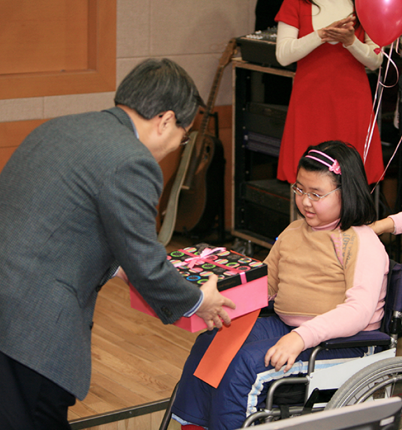
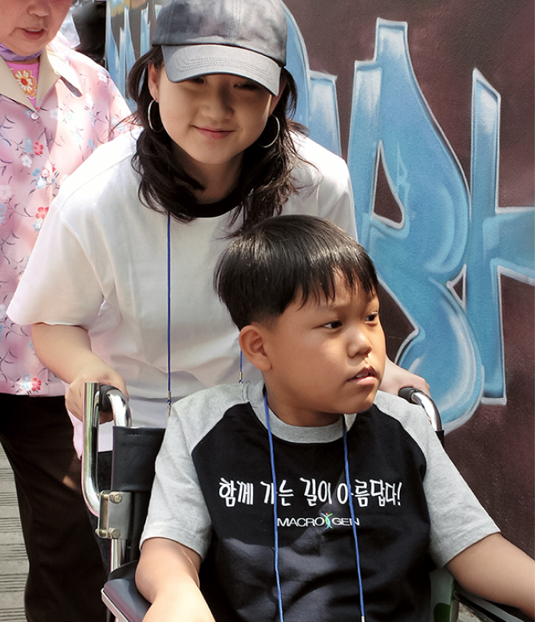

Macrogen supports the activities of MDA Korea.
MDA Korea engages in various activities to find a cure for muscular dystrophy as well as activities to share information on muscular dystrophy,
including providing benefits for patients belonging to MDA Korea, regular offline gatherings, and consulting service for the diagnosis and care of patients
with muscular dystrophy.
We help researchers to study muscular dystrophy, and support their studies on rare diseases, and create opportunities to socialize and interact by organizing
an annual spring outing with patients, executives, and employees of Macrogen and mini-concerts.

What Is Muscular Dystrophy?
Muscular dystrophy is a degenerative muscle disease that shows progressive degeneration of muscle strength.
This disease has the pathological characteristics of necrosis and regeneration of muscle fiber due to genetic factors.
A specific protein that is lost by mutation of genes such as the dystrophin gene, goes through muscle fiber necrosis and degeneration caused
by damage to muscle cell membranes, resulting in degeneration of muscle strength and muscle dystrophy. It occurs in 50 - 60% of the cases caused
by deletion of genes and the other 40 - 50% is known to be caused by mutation, microdeletion, and duplication of genes.
